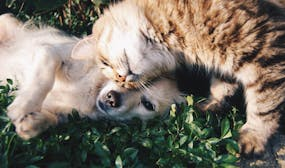

Adopta Felicidad
Encuentra un compañero
Nuestra misión
En PetHaven conectamos humanos con su mascota.Nuestro compromiso es conectar animales necesitados con personas y familias dispuestas a brindarles una segunda oportunidad.Somos un equipo dedicado de amantes de los animales,voluntarios y profesionales que trabajan incansablemente para rescatar,rehabilitar y encontrar hogares permanentes para perros y gatos.Creemos en la importancia de educar a la comunidad sobre la responsabilidad de tener una mascota,así como promover la esterilización y castración para controlar la población animal.
Requisitos para adoptar
En PetHaven sabemos la importancia de que no haya ningún animal sin familia y por eso apoyamos y ayudamos a rescatistas y fundaciones todos los días para lograrlo.
Si estas pensando en sumar un amigo peludo tenés que saber el compromiso que esto implica.No sólo será tu compañía sino un integrante más de la familia.Por lo que te recomendamos planifiques bien su llegada,asegúrate que todos estén de acuerdo y que en tu edificio o casa se permitan mascotas.Tené en cuenta los gastos mensuales relacionados,cuidados generales que necesitará para que se encuentre saludable y cómodo y con quién dejarlo en caso de salir de vacaciones.
Te dejamos acá un resumen de las preguntas que recibimos siempre así te ayudamos a prepararte en lo que se viene
Gracias a nuestra campaña de Adopción Responsable estas familias reciben #AmorPuro
